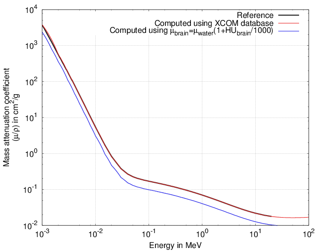
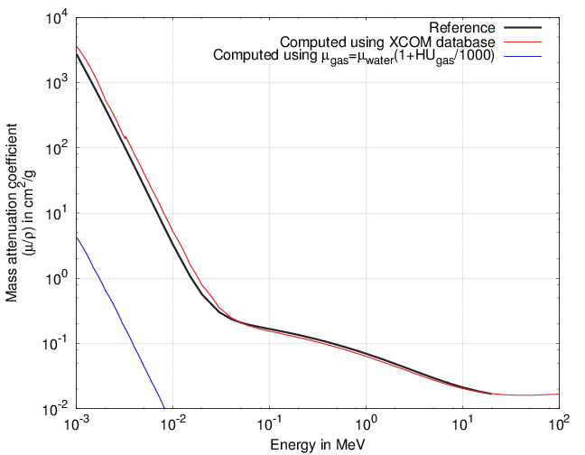
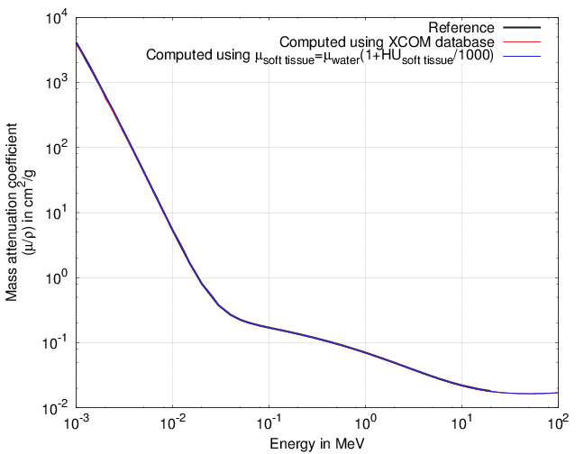

| Material | Density (ρ) (in g/cm3) | Mass attenuation coefficient (μ/ρ) at 80 keV (in cm2/g) | Linear attenuation coefficient (μ) at 80 keV (in cm-1) | HU (estimated at 80 keV) | Bone, Cortical (ICRU-44) | 1.920E+00 | 2.229E-01 | 4.280E-01 | 1330 |
|---|---|---|---|---|
| Brain, Grey/White Matter (ICRU-44) | 1.040E+00 | 1.831E-01 | 1.904E-01 | 37 |
| Tissue-Equivalent Gas, Propane Based | 1.826E-03 | 1.783E-01 | 3.256E-04 | -998 |
| Tissue, Soft (ICRU-44) | 1.060E+00 | 1.823E-01 | 1.932E-01 | 52 |
| Water, Liquid | 1.000E+00 | 1.837E-01 | 1.837E-01 | 0 |






